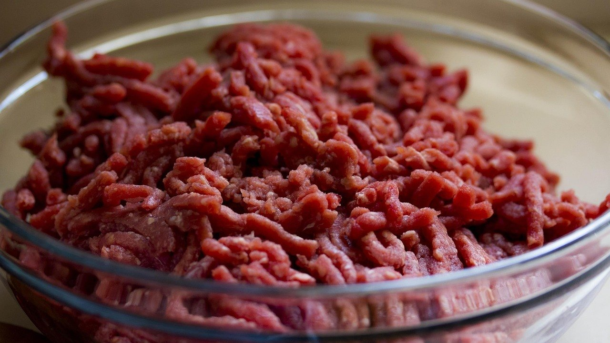
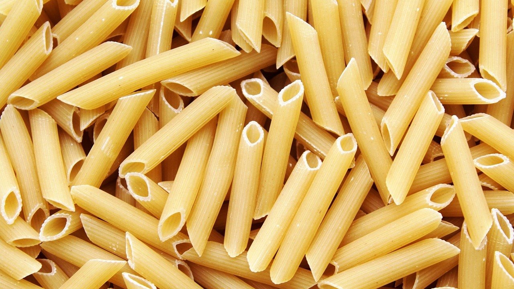

Макароны по-флотски с фаршем на сковороде: 5 ошибок, из-за которых они выходят сухими
Макароны по-флотски с фаршем у нас дома готовятся тогда, когда думать про ужин уже некогда. Фарш в морозилке есть почти всегда, макароны тоже, а через полчаса на столе горячая сковорода, и вся семья довольна.
Блюдо кажется самым простым на свете. Но именно поэтому его часто делают на автомате: сварили, обжарили, смешали. А потом удивляются, почему макароны слиплись, фарш сухой и серый, а на тарелке хочется добавить кетчупа побольше.
Никаких хитростей тут нет, есть пять мелочей. Каждая занимает минуту, а вместе они превращают «быстро что-нибудь» в нормальный вкусный ужин.
Фарш не любит толпу
Если вывалить на сковороду сразу весь фарш одним комом, он не жарится, а тушится в собственном соке. Получаются серые крошки без вкуса и корочки.
Что делать: хорошо разогреть сковороду с маслом и выкладывать фарш тонким слоем, первые 3–4 минуты не мешая.

Если сковорода небольшая, фарш лучше обжарить в два приёма. Пусть лучше подождёт половина, чем вся порция сварится вместо того, чтобы зарумяниться.
Лук без внимания
Лук часто бросают вместе с фаршем, и он просто теряется. А ведь именно поджаренный лук даёт ту самую домашнюю сладость, за которую это блюдо и любят.
Что делать: обжарить мелко нарезанный лук отдельно до золотистого цвета, а потом добавить к фаршу.
Можно и в той же сковороде: сначала лук, потом сдвинуть его к краю и выложить фарш. Морковка на мелкой тёрке тоже не помешает, она делает вкус мягче.
Солить фарш лучше ближе к концу, когда он уже подрумянился. Соль в самом начале вытягивает сок, и фарш снова начинает тушиться.
Макароны, которые переварили
Макароны для этого блюда ещё будут греться в сковороде вместе с фаршем. Если сварить их до полной мягкости, на сковороде они разварятся и превратятся в кашу.
Что делать: варить макароны на 1–2 минуты меньше, чем написано на пачке, в хорошо подсоленной воде.

Воду берут побольше: примерно литр на каждые 100 граммов макарон. В тесной кастрюле они слипаются ещё до того, как сварятся.
Вся вода в раковину
Обычно макароны откидывают на дуршлаг, и вода уходит до последней капли. А в ней есть крахмал, который как раз помог бы соединить фарш и макароны.
Что делать: перед тем как слить воду, отлить полстакана и добавить её на сковороду, когда смешиваете макароны с фаршем.
Крахмальная вода делает блюдо сочным и чуть обволакивающим, без лишнего масла. Это приём итальянских поваров, и в наших макаронах он работает не хуже.
Смешали и сразу на стол
Макароны и фарш живут в одной сковороде, но пока не знакомы. Если перемешать их и сразу подать, фарш скатывается на дно тарелки, а макароны остаются отдельно.
Что делать: после смешивания прогреть всё вместе на среднем огне 2–3 минуты под крышкой, а потом дать постоять ещё пару минут.
За это время макароны впитают сок от фарша. Сверху можно добавить кусочек сливочного масла и мелко порубленную зелень.
Пара слов про тушёнку и томат
Многие делают макароны по-флотски с тушёнкой, как в старых столовых и в походе. Это тоже вкусно, только тушёнку уже не нужно долго жарить: её прогревают вместе с луком несколько минут.
Ложка томатной пасты, обжаренной с фаршем, даёт блюду приятную кислинку. Но классика всё-таки без неё: только фарш, лук, макароны и чёрный перец.
Простые ужины держатся на мелочах. Фарш тонким слоем, недоваренные макароны и полстакана воды из кастрюли, и сковорода пустеет быстрее, чем успеваешь налить чай.
А вы готовите макароны по-флотски с фаршем или с тушёнкой?